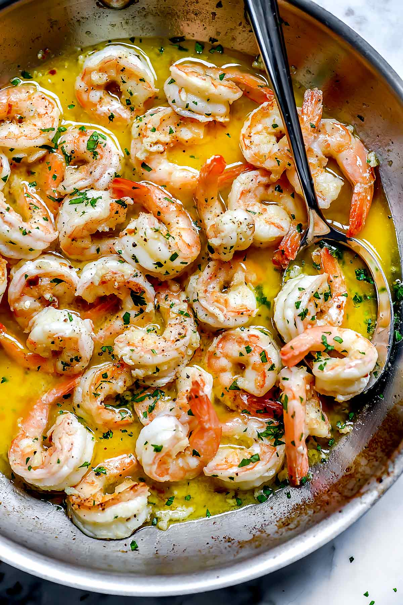

Shrimp Scampi

Description
Scampi are tiny, lobster-like crustaceans with pale pink shells (also called langoustines). Italian cooks in the United States swapped shrimp for scampi, but kept both names. Thus the dish was born, along with inevitable variations.
Ingredients
- 2 tablespoons butter
- 2 tablespoons extra-vrigin olive oil
- 4 garlic cloves, minced
- 1/2 cup dry white wine
- 3/4 teaspoon salt
- 1/8 tablespoon crushed red pepper flakes
- freshley ground black pepper
- 1 3/4 pounds large shrimp, shelled
- 1/3 cup chopped parsely
- juice of half a lemon
- cooked pasta or crusty bread
Steps
- In a large skillet, melt butter with olive oil. Add garlic and sauté until fragrant, about 1 minute. Add wine or broth, salt, red pepper flakes and plenty of black pepper and bring to a simmer. Let wine reduce by half, about 2 minutes.
- Add shrimp and sauté until they just turn pink, 2 to 4 minutes depending upon their size. Stir in the parsley and lemon juice and serve over pasta or accompanied by crusty bread.